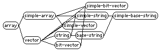
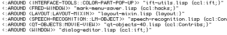

In Chapter 10 we learned about two
functions you can use to examine Lisp objects: DESCRIBE and
INSPECT. These are available in every implementation, so
you should learn how to use them just in case you find yourself sitting
at a console in front of a new and unknown Lisp system someday.
Some Lisp systems offer additional tools that aren't part of ANSI Common Lisp. Sometimes the extra tools are built in, and other times they're provided by the vendor but not installed by default. In this chapter I'll tell you a bit about these tools, so you'll know what to look for.
In addition to exploring the structure and relationships of objects,
it's sometimes useful to "hook in" to the behavior of certain functions.
You might just want to know when -- or whether -- a function
is called with certain arguments. TRACE is always at your
disposal (see Chapter 16), but you may only
be interested in one particular call out of thousands; generating the
trace output (never mind sifting through it later) can be very time
consuming. For cases like this, some Lisp implementations let you
advise an existing function without changing its source code.
When you program a large system using CLOS, especially if the
system evolves over time as so many do, you'll need a tool to help
you examine the relationships between classes. Some Lisp
systems provide a browser that displays these relationships
graphically. Here's an example of what my system's browser displays
as the subclasses of ARRAY:

Another useful tool, the method browser, lets you explore all of
the specializations of a particular method. The browser may let you
filter on particular qualifiers (we learned about qualifiers in Chapter 14), and will almost certainly give
you navigational access to selected method definitions. Here's a
list from the method browser in my Lisp system; I asked for a list
of all INITIALIZE-INSTANCE methods having the
:AROUND qualifier:

Remember that methods do not belong to classes; that's why we have separate browsers. (Some browsers give you the ability to navigate the coincidental connections between classes and methods, such as by examining the classes used to specialize arguments to a method.)
Some Lisp systems include an ADVISE capability. This
lets you intercept calls to existing functions. You can provide code
that examines (and perhaps alters) the function's arguments and
results. ADVISE has many uses, most of them invented on
the spur of the moment. However, one common use of
ADVISE is to implement a TRACE or
BREAK that is conditioned upon particular arguments or
results.
The syntax and options for ADVISE vary from system to
system. Here's an example of defining advice in one particular
implementation:
(advise fibonacci
(when (zerop (first arglist)) (break))
:when :before
:name :break-on-zero)
This example shows how to advise a FIBONACCI
function by adding code that breaks into the debugger when
FIBONACCI's first argument is zero. Note that we
do not need any knowledge of or access to the source code of
FIBONACCI in order to add this advice.
This particular implementation of ADVISE binds a
list of all of the advised function's arguments into a variable
named ARGLIST. The keyword arguments declare that the
advice form, (WHEN (ZEROP (FIRST ARGLIST)) (BREAK)), is
to be executed before each call to FIBONACCI.
The advice has the name :BREAK-ON-ZERO; this name is
used when removing advice (typically via an UNADVISE
form) or when redefining the behavior of a particular advice.
A watch tool, found less commonly on Lisp systems, allows you to display the current state of a variable as your program runs. The details vary widely. Implementations may give you sampled real-time display, or may slow the program down in order to give you an accurate display of each change. Sometimes the watcher is integrated with a debugger or stepper, and other times it is an independent tool. Consult your vendor's documentation to learn whether your Lisp system has a watch tool.